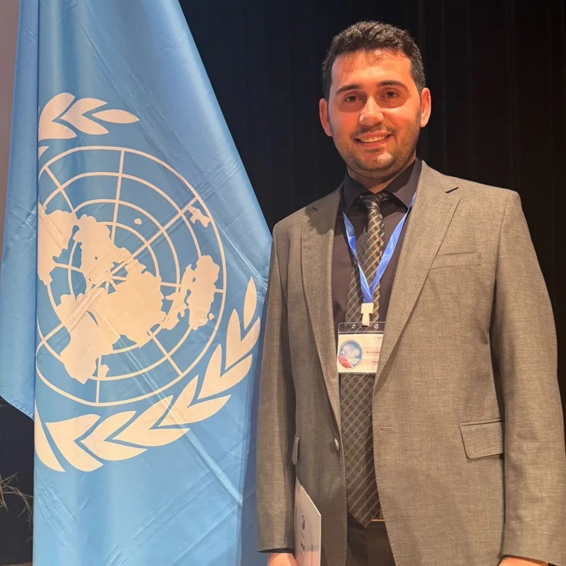
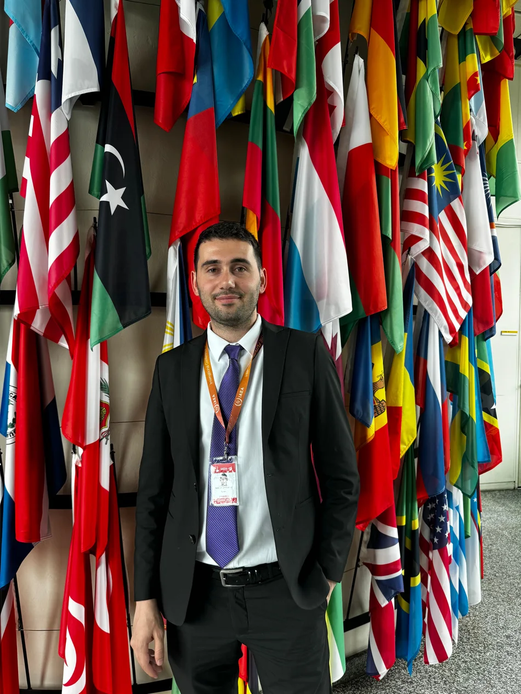

International engagement / Mustafa Umut Ozbek
UNODA and IAEA engagement
My international work spans two distinct areas: nuclear disarmament education through the United Nations Office for Disarmament Affairs (UNODA), and civilian nuclear security research and technical exchange through the International Atomic Energy Agency (IAEA).
Youth Leader Fellow / 2025-2026
United Nations Office for Disarmament Affairs
I took part in the second cohort of the Youth Leader Fund for a World Without Nuclear Weapons. UNODA leads the programme, and the United Nations Institute for Training and Research (UNITAR) supported the study visit to Japan.
During the 2026 visit to Hiroshima and Nagasaki, I listened to survivors' accounts, visited peace memorial sites, and discussed how young people can preserve those stories and contribute to nuclear disarmament education. The visit concluded with the youth-led From Memory to Action conference in Hiroshima.

Youth delegate and presenter / Vienna, 2024
IAEA Nuclear Security Delegation for the Future
I served as a youth delegate at the International Conference on Nuclear Security (ICONS 2024) at IAEA headquarters. As part of the delegation, I supported technical sessions as an assistant technical officer.
I also presented Enhancing Security and Cybersecurity of Nuclear Power Plants Based on Explainable AI. The research explored how explanations for anomaly alerts could help engineers interpret monitoring results in nuclear instrumentation and control systems.
Official ICONS programme (PDF) My conference recap Related nuclear I&C research

Coordinated Research Project / Contributor
Enhancing Computer Security for Radiation Detection Systems
I contributed to work under IAEA Coordinated Research Project J02017. The project focuses on the computer security of radiation detection systems, including how those systems remain reliable when they use digital components and communications.
IAEA project J02017 Simulator-based nuclear cybersecurity teaching